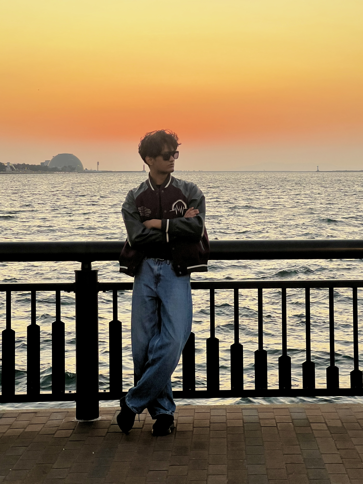

See the Work
Portraits, events, and lifestyle moments — all shot in and around Osaka.



The person behind the lens.
21 years old. Based in Osaka. Bilingual in English and Japanese. I photograph people — not how they look, but how they feel. Every session starts with a conversation, not a camera.
I'm 21, studying IT in Osaka, working two jobs, helping at my family's restaurant. Somewhere between all of that, I found photography. But the real story starts earlier.
I grew up with depression and social anxiety — though I didn't have a name for it until a panic attack sent me to the hospital. The doctor told me what I'd been living with my whole life. Something shifted after that diagnosis. Medication helped quiet the noise. I started thinking more clearly. I started talking to strangers.
I realised I had always seen the world differently — noticing details others walked past. That wasn't weakness. That was a vision waiting for a lens.
I started with my iPhone — and honestly, the photos were good. About a year ago I picked up a real camera and never put it down. I carry it everywhere. When I photograph someone, I'm not just capturing how they look — I'm capturing how they feel. That's what depression taught me: how to feel everything deeply.
I turned the heaviest thing in my life into the most beautiful. If I can do that, so can you.
I also build websites. →
Before every session, I talk. I want to know who you are — not your best pose, but your actual self. What makes you laugh. What you're nervous about. What you hope people see when they look at you.
Then I find the light. Then I wait for the moment. I don't create the shot — I recognize it. That distinction is everything.
The non-photography side of things.
Portraits, events, and lifestyle moments — all shot in and around Osaka.
Whether it's a portrait session, a walk through Osaka, or an event — reach out and let's talk. I reply within 24 hours.
Get In Touch